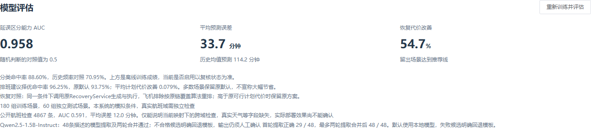
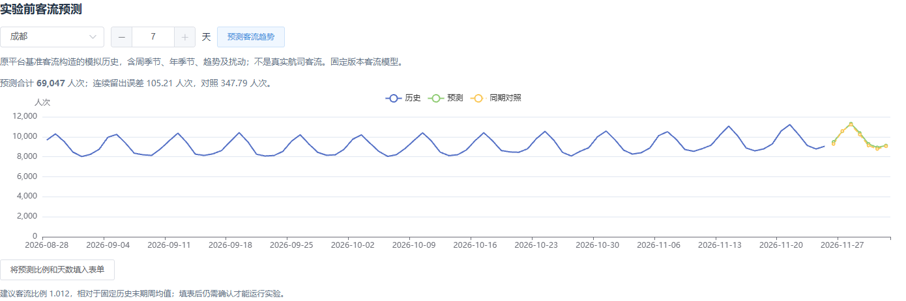
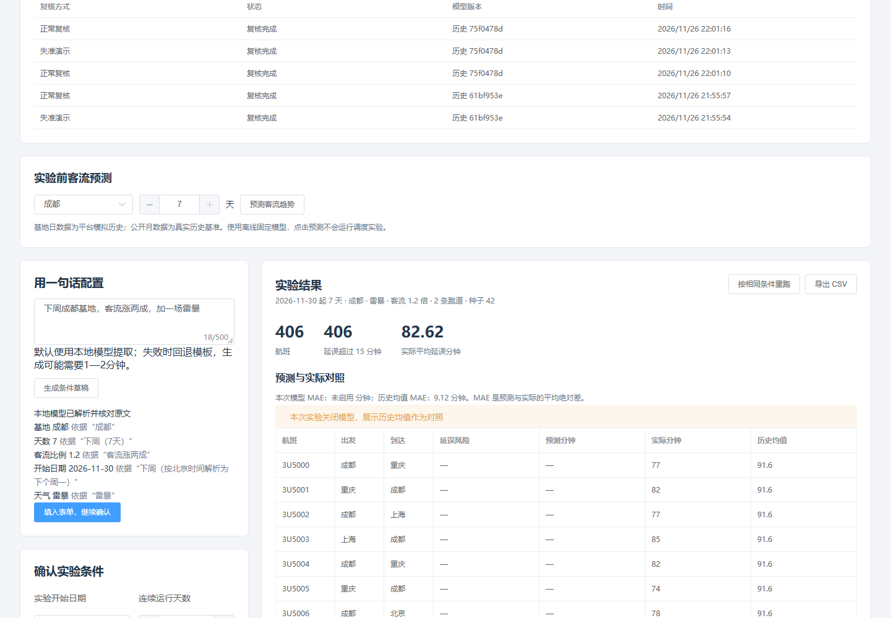
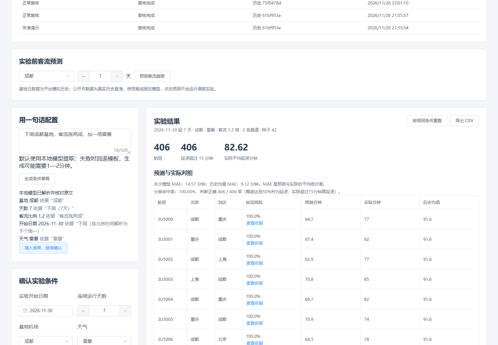
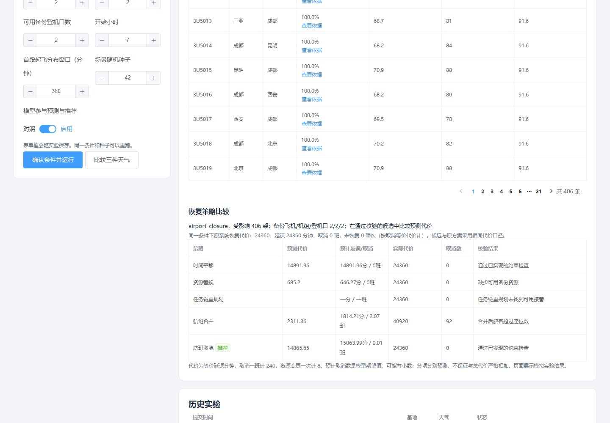
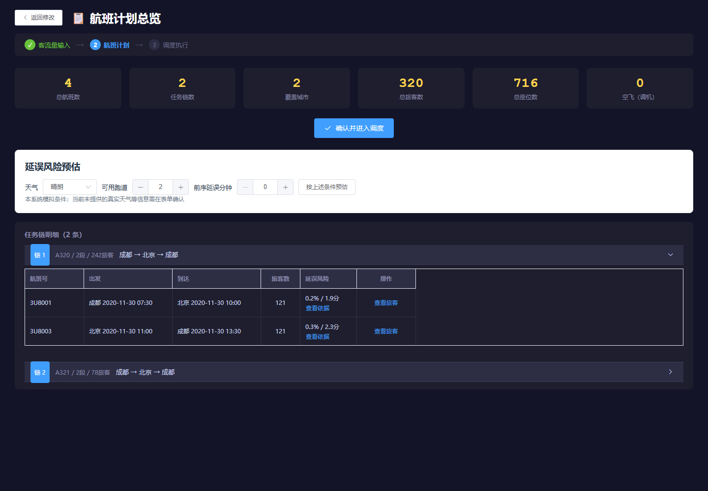
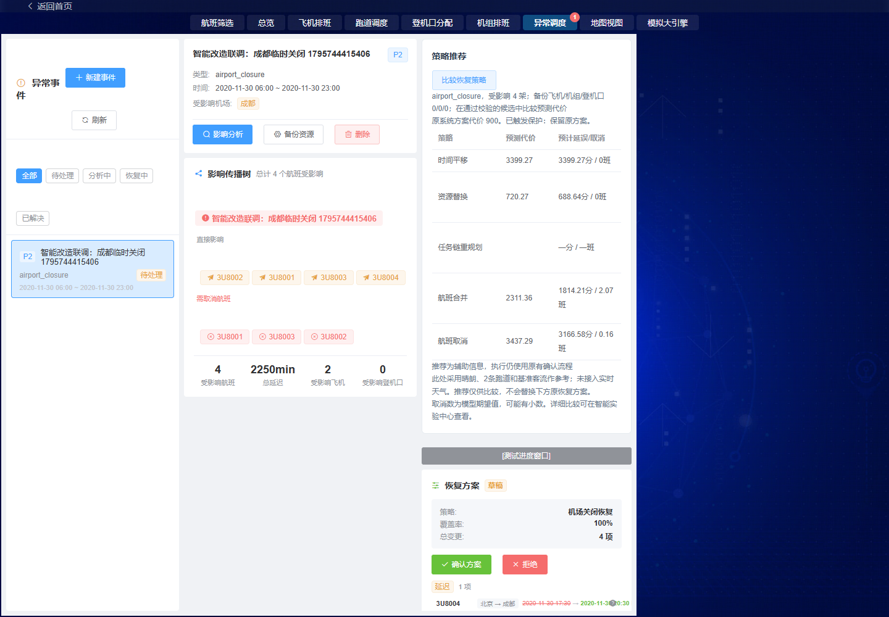
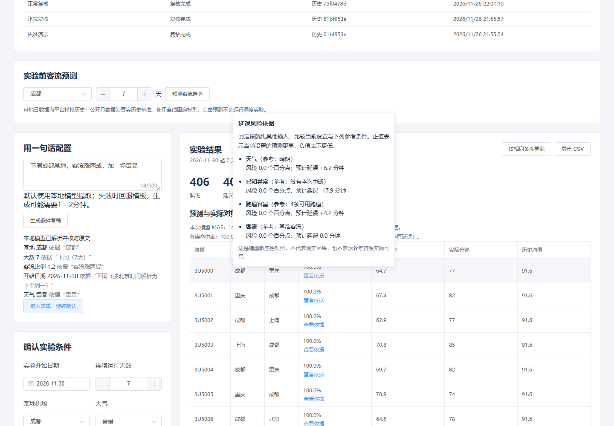

2026-11-27，本机Chrome与真实Flask后端联调。10张图片为实际程序运行截图，没有论文图片或生成图片。实验中的“实际分钟”是系统模拟结果；截图由本地自动化联调生成，航班和异常均为演示数据。
基础浏览器检查 · 六项补齐联调 · 回归与交接测试摘要 · 前端构建记录 · 1.5B逐条评测 · 模型字段来源核对 · 环境与模型交接说明
最终验收汇总：模型81860180，两组浏览器检查版本一致。旧24条由原流程16/24改善为新流程两轮合并24/24，新24留出也24/24；首轮单次29/48，最多一次只给字段名的反馈合并后48/48。每个计入模型成功的值均可追溯到模型输出，默认启用本地模型流程；不是单次输出100%或任意表述保证。
页面分别显示首轮与两轮合并成绩；默认本地模型，失败或低内存时仍保留模板回退。

显示模拟日历史、预测与同期对照，可把基地、比例、天数填入表单，仍需确认运行。真实历史月数据另外标明用途。

当前默认官方1.5B本地模型；字段附原文依据，日期由日历解析器处理。左侧是新草稿，右侧可仍是上一次历史实验；生成和填入草稿都不运行新实验，真正的新结果见下一张。不合格候选明确回退模板。

显示判断正确架数、总架数、命中率及分钟误差；个别实验不保证优于历史均值，实际误差照常展示。

基线实际调用原恢复服务生成并执行隔离副本。取消、未恢复架次分开显示；计划成本更差时保留原可行方案，不自动采用推荐。

比较三个原算法、约束和代价。选用只改变算法下拉框，仍需点击原“一键排班”；原默认方案多数时候已经最优。
此图是明确的人为失准演示，延误模型被停用；正常复核后恢复。浏览器记录同时核实保存的权重没有改变。服务运行期间按7天周期检查，离线后重启补做。
先确认天气、容量与前序条件，再展开任务链查看风险。

完成影响分析后比较策略，下方仍沿用原确认与执行流程；联调实际执行成功。

固定其他条件，查看当前因素相对参考值的模型预测变化，不当作现实因果结论。
